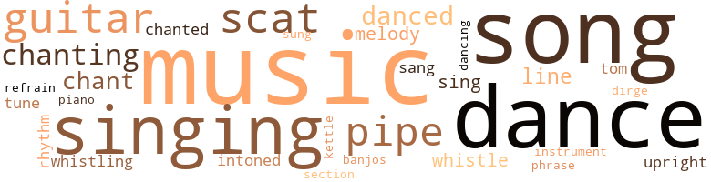
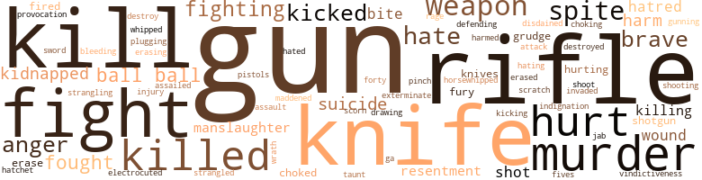
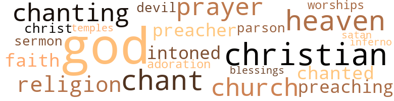

Long Search (The), by Bosworth, William (1957)
141 music-related terms matched in this text.
Most frequent terms in this topic: music (17); singing (11); guitar (10); dance (9); chanting (8)
banjo.n.01
Definition: a stringed instrument of the guitar family that has long neck and circular body
| word | sentence |
|---|---|
| banjos | They could hear the chanting of songs and the strumming of banjos . |
chant.n.01
Definition: a repetitive song in which as many syllables as necessary are assigned to a single tone
| word | sentence |
|---|---|
| chants | The Indians took up the cadence of the priest , their chants rising higher and ever higher , leaping like a dashing warrior and echoing through the trees . |
| chant | George 's ears caught the hum of voices , and the hum grew into a low sad chant . |
| chant | Below him the people echoed his chant softly . |
| chant | The chant continued as he walked on toward town , to cash the blue tickets for Mattie . |
dance.n.01
Definition: an artistic form of nonverbal communication
| word | sentence |
|---|---|
| dance | The Chief and the priest stood watching them perform the intricate dance of the Green Corn . |
| dance | Then , without warning , they broke into the dance of the turkey , imitating the cries of the gobbling bird to the delight of the entire square . |
| dance | The dance subsided momentarily . |
| dance | Overjoyed , the young brave started a slow dance of his own , his fatigue notwithstanding . |
| dance | She came back to him , and whispered , " Let 's dance . " |
dance.n.02
Definition: a party of people assembled for dancing
| word | sentence |
|---|---|
| Dance | They will dance under the blue moon , around the lodge fires , at the Green Corn Dance , and there will be singing and roasting and eating of acorns and cabbages of the palmetto . |
| Dance | He heard shouts of gaiety as the celebration of the Green Corn Dance was about to begin . |
| Dance | Done up in paints of the most outlandish colors , the priest , serving as the interpreter , adviser , and physician , signaled for the beginning of the Green Corn Dance . |
| Dance | They were holding their festival ... the Green Corn Dance they call it . |
dance.v.03
Definition: skip, leap, or move up and down or sideways
| word | sentence |
|---|---|
| dance | They will dance under the blue moon , around the lodge fires , at the Green Corn Dance , and there will be singing and roasting and eating of acorns and cabbages of the palmetto . |
| danced | On through the darkness they danced . |
| dance | They moved about the men , and began to dance to the tune of long cadenced songs . |
| danced | As they danced about the square - the movement of their bodies spinning on feet as delicate as a doe - not a sound could be heard from the shells filled with pebbles . |
| dance | A shout went up as the tribes gathered around him , and began to dance . |
| dance | " I do n't want to dance , " he said . |
| danced | As she strummed her guitar , she danced around the stage . |
| dancing | Sunlight sent shadows dancing on the walls of the room from the branches of the trees outside . |
| danced | The cord slipped from his hand , and the kite danced out over the sea , sailing up , then falling slowly into the ocean . |
| danced | You danced around , parading your charms . |
| danced | Sea gulls danced and dipped and rose in the wild winds against the black clouds , red-streaked with sunlight . |
dirge.n.01
Definition: a song or hymn of mourning composed or performed as a memorial to a dead person
| word | sentence |
|---|---|
| dirge | There were more and more sparks , falling in all directions , shooting skyward as they bounced off the flint , and the voices kept up their melancholy dirge . |
guitar.n.01
Definition: a stringed instrument usually having six strings; played by strumming or plucking
| word | sentence |
|---|---|
| guitar | George looked quickly at Mr. Dickerson , with a guitar swung across his shoulders , and clad in a parson 's attire . |
| guitar | Dickerson pulled the guitar over his head . |
| guitar | " Here , hold this , " he said handing the guitar to Honey . |
| guitar | " Hey , Big Shot , " someone shouted , " take his guitar away from the girl , and let 's have music . " |
| guitar | Suddenly , the sound of music from a guitar broke out over the bean field . |
| guitar | At the edge of the field , tired bean pickers , their work done , were making a circle around a tall stately black man holding a guitar . |
| guitar | The young brown-skinned girls were beginning to sway to the music of the guitar . |
| guitar | When she returned , she was wearing a black-bcadcd dress , and holding a guitar against her bosom . |
| guitar | As she strummed her guitar , she danced around the stage . |
| guitar | One man in the middle began to stomp his feet , as he broke into a Jamaican rhythm , meanwhile strumming his guitar : Moe and Joe , had a country store , Telling fortunes behind the door ; Cop grab Moe and Joe ran out , Brother Moe began to shout : Run Joe , man at the door Run Joe , dc man wo n't let me go ; Run Joe , as fast as you can ; Run Joe , police holding my hand . |
intonation.n.03
Definition: the act of singing in a monotonous tone
| word | sentence |
|---|---|
| chanting | The chanting of the workmen , as they unloaded the barges and wooden quays , floated out over the banks of the canal and sounded pleasing to his ears . |
| chanting | But they would get used to the cry of the bean checker , the roar of the trucks , and the chanting of the copper-colored West Indians , as they toiled under the hot sun , burlap sacks around their waists serving as aprons , and pieces of old rubber innertube on their knees for pads . |
| chanting | " This constant chanting of prayers by the defense reminds me of a tired old man . |
| chanting | They could hear the chanting of songs and the strumming of banjos . |
kettle.n.04
Definition: a large hemispherical brass or copper percussion instrument with a drumhead that can be tuned by adjusting the tension on it
| word | sentence |
|---|---|
| kettle | John , holding the baby led the way into a clearing where a small kettle simmered over a slow burning fire . |
music.n.01
Definition: an artistic form of auditory communication incorporating instrumental or vocal tones in a structured and continuous manner
| word | sentence |
|---|---|
| music | He heard music blaring from Sparks ' Tavern . |
| music | He stopped and listened to the music and the stomping of feet inside the place . |
| music | George shook his head as he sat down on an improvised bench before the bar , and listened to the music blaring from the coin box . |
| music | Women dancin ' to crazy music . |
| music | The juke music was blaring out into the street . |
| music | She backed away from him , and her right foot began to tap to the music . |
| music | She yvaved it in a curving S through the air to the beat of the music . |
| music | " Hey , Big Shot , " someone shouted , " take his guitar away from the girl , and let 's have music . " |
| music | Immediately the saloon rang with the blare of music . |
| music | Suddenly , the sound of music from a guitar broke out over the bean field . |
| music | The young brown-skinned girls were beginning to sway to the music of the guitar . |
| music | The others clapped to the tune of the calypso music , and as he came abreast of them , the tall man began to sing . |
| music | He went to the tavern , and heard the music blaring from the jukebox as he entered . |
| music | The place was crowded with men and women swaying to and fro to the syncopated beat of the music . |
| music | They were in the church , listening to the doleful music . |
| music | Her head thrown back , she was rocking from side to side to the music of a small orchestra surrounded by soft green ferns and royal palms . |
| music | The room was instantly flooded with soft music . |
musical_instrument.n.01
Definition: any of various devices or contrivances that can be used to produce musical tones or sounds
| word | sentence |
|---|---|
| instrument | He felt a sharp instrument against his hack and a heavy hand pushing him down the corridor . |
phrase.n.02
Definition: a short musical passage
| word | sentence |
|---|---|
| phrase | As each figure came down the steps past him and said , " Goodnight , Big Shot , " he turned over the phrase " Big Shot " in his mind . |
piano.n.01
Definition: a keyboard instrument that is played by depressing keys that cause hammers to strike tuned strings and produce sounds
| word | sentence |
|---|---|
| piano | They stopped in front of a white painted shanty and they heard the plunking of piano keys . |
pipe.n.04
Definition: a tubular wind instrument
| word | sentence |
|---|---|
| pipe | He saw Uncle Jodie , who was sitting on the front porch , take his pipe from his mouth in disbelief . |
| pipe | Jodie took the pipe out of his mouth , and spat a stream of brown juice upon the green vines . |
| pipe | Mr. Dickerson was trying to relight his pipe , poking at it with a straw he had taken from a broom in the corner of the room . |
| pipe | After sending the boys into the kitchen to do the dishes , he took out his pipe for a smoke . |
| pipe | He mixed a pinch of fresh tobacco with some of his old pipe ashes which he took from a can . |
| pipe | Then he stuffed the mixture into his pipe , and went to the kitchen stove to get a light from the ashes . |
| pipe | Uncle Jodie shook his head , taking his pipe from his mouth . |
| pipes | A truck was approaching , loaded with cement pipes . |
| pipe | Logan sat in the forward end of the boat , nonchalantly pufling a pipe . |
refrain.n.01
Definition: the part of a song where a soloist is joined by a group of singers
| word | sentence |
|---|---|
| refrain | George had been standing in the shadow of the stage , watching her caper through the last haunting refrain of " When I Saw You Standing There . " |
rhythm.n.04
Definition: the arrangement of spoken words alternating stressed and unstressed elements
| word | sentence |
|---|---|
| rhythm | The line grew increasingly longer ; the chanting rose ever higher , and the dancers ' nimble feet beat a faster rhythm . |
| rhythm | One man in the middle began to stomp his feet , as he broke into a Jamaican rhythm , meanwhile strumming his guitar : Moe and Joe , had a country store , Telling fortunes behind the door ; Cop grab Moe and Joe ran out , Brother Moe began to shout : Run Joe , man at the door Run Joe , dc man wo n't let me go ; Run Joe , as fast as you can ; Run Joe , police holding my hand . |
scat.n.01
Definition: singing jazz; the singer substitutes nonsense syllables for the words of the song and tries to sound like a musical instrument
| word | sentence |
|---|---|
| scat | " No , indeed , " she said primly , resuming her scat . |
| scat | He waited until Bledsoe resumed his scat , then resumed his questioning . |
| scat | Demurely , Honey marched back to her scat . |
| scat | Lucius hunched forward in his scat . |
| scat | Lucius slumped back in his scat , obviously relieved . |
| scats | LONG before ten-thirty , the scats in the courtroom were filial . |
| scat | He caught Mattie 's arm , and led her back to her scat . |
| scat | A deputy led George back to his scat . |
| scats | Quickly , they spun around in their scats , and faced the door . |
| scats | He ushered them to covered box scats . |
section.n.01
Definition: a self-contained part of a larger composition (written or musical)
| word | sentence |
|---|---|
| section | " I do n't think there are any good doctors in this section , George . |
sing.v.02
Definition: produce tones with the voice
| word | sentence |
|---|---|
| sing | The others clapped to the tune of the calypso music , and as he came abreast of them , the tall man began to sing . |
| singing | A familiar voice was singing an exotic , haunting melody . |
| sing | She waved in the direction of the orchestra , and began singing : " , Let 's sing a song together . . . A song of my love for you . |
| sang | They built a fire under the stars , toasted sandwiches , and sang innumerable folk songs . |
| sang | Other couples came and went , and sang and ate . |
| sung | The girl had told her how she had sung in a night club , but had lost her job because of the baby . |
| sing | As it started , a few West Indians among the crowd began to sing . |
singing.n.01
Definition: the act of singing vocal music
| word | sentence |
|---|---|
| singing | They will dance under the blue moon , around the lodge fires , at the Green Corn Dance , and there will be singing and roasting and eating of acorns and cabbages of the palmetto . |
| singing | Then they assembled around the fire , dancing and singing . |
| singing | Down through the darkness he stumbled , singing incoherently . |
| singing | George picked up three hampers , and walked down the edge of the field past the dark West Indians who were singing cheerfully and shouting to one another . |
| singing | George watched admiringly as she held a large picture before her , singing : " I look at you , and the sweetness of your face entrances me ; Although it 's just your picture I look at all the time , Just remember , no matter where you are , no matter where you go , you 're mine . |
| singing | She waved in the direction of the orchestra , and began singing : " , Let 's sing a song together . . . A song of my love for you . |
| singing | I hate Incs but I ca n't leave , because finding a singing job is n't easy . |
| singing | After the number , she briefly disappeared from the stage , returning in a flowing chiffon gown , singing : " Do you know just what I want , I 'll tell you ; Do n't want the stars , or a palace with servants , Or a car , with a private chauffeur , Not a fur nor a Park Avenue Penthouse , Put your arms , In a tender caress , in a tender caress , in a tender caress . . . He saw her bow and disappear again , as the curtain was drawn across the stage . |
| singing | They walked on until they reached a canal bank , where they came upon West Indians , singing and fishing along the banks . |
| singing | They lay there , face down , with the winds singing over them , the lightning flashing , the rains drenching them , and the grating of the swaying house sounding loud in their ears . |
song.n.01
Definition: a short musical composition with words
| word | sentence |
|---|---|
| songs | Flares were being lit over the camp ground , songs and voices rose in telling of ancient customs . |
| songs | They retired to the edge of darkness outside the square , where the dancers moved like silhouettes in a long procession around the flashing fire , their voices filling the night with the songs of the great horned owl . |
| songs | They moved about the men , and began to dance to the tune of long cadenced songs . |
| songs | Losing his direction , he stumbled about until he reached his own porch at last , and fell heavily upon it , screaming the wild songs of the Seminoles . |
| song | With a provocative smile on her lips , she glanced around at the men , whistling at her , and broke into a song . |
| song | Her hips moved sensuously as she resumed her song . |
| song | In a sudden change of mood , Flossie broke into the rollicking song of the moment , " Please send me a Man . " |
| song | She waved in the direction of the orchestra , and began singing : " , Let 's sing a song together . . . A song of my love for you . |
| song | She waved in the direction of the orchestra , and began singing : " , Let 's sing a song together . . . A song of my love for you . |
| songs | They built a fire under the stars , toasted sandwiches , and sang innumerable folk songs . |
| song | Overhead a mocking bird broke into song . |
| songs | They could hear the chanting of songs and the strumming of banjos . |
| songs | West Indians were gathered around a large outdoor fire , their voices rising and falling harmoniously in songs of their native land . |
| song | That song is n't meant for you ! " |
tenor_drum.n.01
Definition: any of various drums with small heads
| word | sentence |
|---|---|
| tom-toms | Satisfied , too , until Quecnie tom-toms me with her magic . |
tone.v.01
Definition: utter monotonously and repetitively and rhythmically
| word | sentence |
|---|---|
| chanting | The Indians began chanting . |
| chanting | They locked hands , and their chanting became more intense . |
| chant | The dancers began to chant , circling as before . |
| chanting | The priest began chanting gratitude to the Great Spirit , stretching out his hands in supplication for an abundant new year . |
| chanted | She spun about gracefully , and chanted , " I will give you peace ... I will give you power ! " |
| intoned | Rosa intoned from her chair . |
| intoned | Later , they marched over the black land , and stood quietly by the grave , as the minister intoned his prayers for the departed . |
| chanting | George clapped loudly , then stopped abruptly as she dreamily began chanting : " If I could see you now , Oh , how l would thrill to the touch of your fingertips and your lips , lips so divine . . . and hear you say you 're mine , if I could see you now . . . If l could be tonight with you , alone in a garden where the violets are blue ; l would confess my love and start anew , if I could see you now . . . " Again the room thundered . |
| chanted | The dark-skinned workmen chanted above the noise of the tractor , as they formed a human square around the four corners of the grass field . |
tune.n.01
Definition: a succession of notes forming a distinctive sequence
| word | sentence |
|---|---|
| melody | He put his hand upon her arms , and her laughter became a rippling melody . |
| melody | Suddenly , the dark night was pierced with the weird sounds of a beautiful Indian melody tumbling from his lips . |
| line | He saw the Chief walk to the head of the procession which had formed one continuous line that slowly circled the four corners of the square , where the four braves stood like statues . |
| tune | They moved about the men , and began to dance to the tune of long cadenced songs . |
| tune | The others clapped to the tune of the calypso music , and as he came abreast of them , the tall man began to sing . |
| melody | A familiar voice was singing an exotic , haunting melody . |
| line | " And do n't forget it 's a party line . |
| line | Dish cloths hung on a line made from string . |
| line | He merely concluded that , because of his build , George might come in handy as a monitor to keep the other boys in line . |
upright.n.02
Definition: a piano with a vertical sounding board
| word | sentence |
|---|---|
| upright | Taking a burlap bag from the corner of the boat , he disengaged the stubby blade from the open cut in his boot , and the blade shot upright between his legs . |
| upright | He stood upright , stretching . |
whistle.v.01
Definition: make whistling sounds
| word | sentence |
|---|---|
| whistling | With a provocative smile on her lips , she glanced around at the men , whistling at her , and broke into a song . |
| whistle | Uncle Jodie took out a little whistle he had bought for the occasion , and his red bandanna . |
| whistle | Uncle Jodie raised the whistle to his mouth , and blew . |
| whistle | The wind began to rise and whistle . |
| Whistling | Whistling swans and rosy flamingoes stuck their long beaks into shallow brinks along the shore of a tiny island . |
293 violence-related terms matched in this text.
Most frequent terms in this topic: gun (32); knife (17); kill (16); fight (14); rifle (13)
abrasion.n.01
Definition: an abraded area where the skin is torn or worn off
| word | sentence |
|---|---|
| scratch | I know you wo n't believe me , but I did n't get a scratch . |
aggravation.n.02
Definition: unfriendly behavior that causes anger or resentment
| word | sentence |
|---|---|
| provocation | At the slightest provocation he did not hesitate to apply the strap to any of them for even a minor offense , yet he always allowed Lucius to give the most slovenly answers . |
anger.n.01
Definition: a strong emotion; a feeling that is oriented toward some real or supposed grievance
| word | sentence |
|---|---|
| anger | My people are slow to anger but quick to revenge . |
| anger | She stamped her foot in anger , mistaking the surprise on his face for guilt . |
| anger | George got up , choking back his anger . |
| anger | " Wait until Mattie hears of this , " he said , trembling with anger and pain . |
| anger | By the time he got back , his anger was considerably dissipated . |
| anger | His anger began to rise . |
| anger | The clouds , hanging like misshaped faces against the skies , swelled and burst with anger . |
attack.v.01
Definition: launch an attack or assault on; begin hostilities or start warfare with
| word | sentence |
|---|---|
| assailed | As he stepped into the room , an indescribably foul and pungent odor of decaying garbage assailed his nostrils . |
attack.v.02
Definition: attack in speech or writing
| word | sentence |
|---|---|
| attack | You will hear from these witnesses , each of whom will tic a knot in the chain of murderous acts performed by this scoundrel " - he broke off and pointed a finger of scorn at George - " who sits as if he would dare attack me in the sanctity of this courtroom . |
bleeding.n.01
Definition: the flow of blood from a ruptured blood vessel
| word | sentence |
|---|---|
| bleeding | Finally , he released him and he sat up on the floor , bleeding and bruised . |
contemn.v.01
Definition: look down on with disdain
| word | sentence |
|---|---|
| disdained | Bledsoe disdained to reply . |
| scorn | You will hear from these witnesses , each of whom will tic a knot in the chain of murderous acts performed by this scoundrel " - he broke off and pointed a finger of scorn at George - " who sits as if he would dare attack me in the sanctity of this courtroom . |
destroy.v.04
Definition: put (an animal) to death
| word | sentence |
|---|---|
| destroy | Those we like , and those we do not like as well - those who would destroy through fear . |
| destroyed | But there were others , unfortunately , who would sneak pistols into the school , and who quickly and irrevocably destroyed the discipline of the classroom . |
draw.v.23
Definition: pull (a person) apart with four horses tied to his extremities, so as to execute him
| word | sentence |
|---|---|
| drawing | The countryside was alive with the voices of the pickers - men , women , and children who were bounced around in the trucks drawing up before the bean field . |
electrocute.v.02
Definition: kill by electrocution, as in the electric chair
| word | sentence |
|---|---|
| electrocuted | If it 's murder , you 'll either be hanged by the town , shot in defense by the sheriff and his deputies , or electrocuted by the state . |
erase.v.01
Definition: remove from memory or existence
| word | sentence |
|---|---|
| erasing | Now as he got to his feet , he tried to blot it out , like one erasing chalk lines from a blackboard . |
| erase | For no man can erase a scar from life . |
| erase | He ca n't erase the past , but he can cross it out , and build a new life . |
| erased | Turning it over , he saw that his name had been erased , and " Lucius " had been scrawled over it . |
exterminate.v.01
Definition: kill en masse; kill on a large scale; kill many
| word | sentence |
|---|---|
| exterminate | The government ought to exterminate them . |
fight.n.05
Definition: a boxing or wrestling match
| word | sentence |
|---|---|
| Fight | Fight ? " |
| fight | " Where are the guys looking for a fight ? " he demanded . |
| fight | Whatever you do , do n't get in a fight with him . " |
| fight | " You 're spoiling for a fight ! " |
| fight | Parmalce told me that they tried to provoke you into a fight in the bean field yesterday , so Lucius could kill you in self-defense . |
| fight | " At the time of the fight in your field , Mr. Jodie , you put him to work just like your own son , did n't you ? " |
| fight | " Now , in your own words , tell us about the fight . " |
| fight | I pulled my Pa 's gun out and ordered him off of Parm , trying to break up the fight . |
| fight | I only pulled the gun on him to stop the fight . " |
| fight | He wondered if enough money could be raised to carry the fight to a higher court , and whether he could prepare an adequate case . |
| fight | I would n't pick a fight with a runt like you . " |
fight.v.02
Definition: fight against or resist strongly
| word | sentence |
|---|---|
| fighting | A single small bulb was fighting the overpowering darkness of the room . |
| fighting | " Now do n't go fighting this guy . |
| fighting | " I 'd never choose you , " he said , feeling her irresistible attraction and fighting it . |
| defending | " You 're defending him . " |
| fight | I do n't have to fight you . " |
| fighting | Wanted to git away from smoke , and fussing , and fighting . . . and high falutin ' folks , but looks like it finally caught up with me , Miss Mattie . |
| fight | Harrison said , " Your Honor , the facts arc so plain and clear , that there is no case to fight . |
| fight | Truth drives me to fight without remuneration , for the cause of this poor defenseless blind woman and her son , because they have no one to turn to on God 's green earth . |
| fought | " George fought me like a murderer today , " he told his wife . |
| fighting | " He 's sure fighting mad . " |
| fought | Her coughing became fainter and fainter as she fought against blackness . |
| fought | They fought to move forward through the currents . |
| fight | George made flambeaus to fight off the mosquitoes , and they spent the night under nets . |
| fought | The rest of the day they fought the grass in vain . |
| fought | He fought wildly to regain the ever-widening distance . |
| fighting | From where they were standing on the rooftop , they saw him fighting against the current to reach the tree . |
forty-five.n.01
Definition: a .45-caliber pistol
| word | sentence |
|---|---|
| forty-fives | A group of silent men , wearing forty-fives and wide brim straw hats , stood around the truck , squinting at them with hard lean faces . |
fury.n.01
Definition: a feeling of intense anger
| word | sentence |
|---|---|
| fury | It was the only time he had provoked her to violent fury during their thirty years of marriage . |
| rage | She was trembling with rage , as she held the pocketbook upside down , so he could see it was empty . |
| fury | She turned to Ines , fury contorting her face . |
gag.v.06
Definition: cause to retch or choke
| word | sentence |
|---|---|
| choking | George got up , choking back his anger . |
| choked | Little Wilbur ran to him , and he choked as he saw the shining eyes of the child . |
| choked | The narrow waterway was choked with floating grass . |
grudge.n.01
Definition: a resentment strong enough to justify retaliation
| word | sentence |
|---|---|
| grudge | As I lie here , not knowing whether I will pull through , I bear no grudge . |
| grudge | I hold no grudge . " |
gun.n.01
Definition: a weapon that discharges a missile at high velocity (especially from a metal tube or barrel)
| word | sentence |
|---|---|
| gun | He 's toting a gun for you . " |
| gun | Mike , here , swears he 's seen the gun " " That 's right , Big Shot . |
| gun | " Who gave him the gun ? " |
| gun | Like pieces of a jig-saw puzzle they fell into their proper places in order to form a picture - an ominous one of a figure waiting for him with a gun . |
| gun | Lucius was pulling his arm out of his jacket , and he saw the sharp blue muzzle of the gun aimed at him . |
| gun | George 's lack of fear unnerved Lucius , and his hand , holding the gun , trembled . |
| gun | It was the sheriff standing over him with a gun pointed at his ribs . |
| gun | " Say , sheriff , " someone said , " his son 's got a gun . " |
| gun | " Hand over the gun , " he instructed him . |
| gun | " Who gave you that gun , boy ? " |
| gun | I gave him the gun . " |
| gun | The maid let them in , and said he was cleaning his gun to go hunting . |
| gun | " Will you tell this court why your son had a gun ? " |
| gun | I pulled my Pa 's gun out and ordered him off of Parm , trying to break up the fight . |
| gun | George came at me while I stood there , holding the gun . |
| gun | I only pulled the gun on him to stop the fight . " |
| gun | 1 ' or example , the type of gun Lucius aimed at my client ; the time of day it was , nor anything else to further our case , if we were interested in such matters . |
| gun | The sheriff twisted the hriin of his hig sombrero between his fingers , as Harrison held up the gun . |
| gun | " Do you recognize this gun , Sheriff ? " |
| gun | Uncle Jodie grasped the gun . |
| gun | He got a good bold on the gun in his belt , then pushed tbc door open , and went inside . |
| gun | George turned sideways , but could not get out of gun range . |
| gun | In a low tackle he lunged forward , feeling the older man 's legs buckle , as the gun sounded in his ears . |
| gun | Instinctively , he reached for the hand be knew held the gun , as they tangled together on the floor . |
| gun | George caught a glint of the gun , swinging in an arch , and knew he would be looking down the barrel . |
| gun | His fist flew out , and struck tbe hand , deflecting the gun . |
| gun | " Put your gun away , " George shouted . |
| gun | George saw him drop the gun and begin to pole the canoe toward them . |
| gun | George reached for bis gun , and held it above bis chest . |
| guns | Upon reaching it , they saw many guards waving their guns threateningly and bellowing at groups of West Indians . |
| guns | Instantly guns roared . |
| gun | He turned , saw Flossie 's hand coming up past the flambeau with a gun aimed at him . |
| guns | He quickly ducked and heard guns harking simultaneously . |
| gun | The West Indian woman advanced across the narrow distance separating them , and threw her gun upon the ground . |
| gun | She leveled the gun at him . |
gun.v.01
Definition: shoot with a gun
| word | sentence |
|---|---|
| gunning | The prosecuting attorney , according to this indictment , is gunning for your son 's life or at least manslaughter , which could put him away for life . |
harm.v.01
Definition: cause or do harm to
| word | sentence |
|---|---|
| harmed | There are a lot of them that never harmed me - little children , and others I have never seen . |
| harm | " She 's not going to harm you . |
hate.n.01
Definition: the emotion of intense dislike; a feeling of dislike so strong that it demands action
| word | sentence |
|---|---|
| hatred | He looked at the twisted masks of hatred written upon their faces . |
| hatred | It might reveal his hatred of George , which I do n't think he ever admitted , even to himself . |
| hate | He remembered Camilla 's words about peace only coming to a mind that was free of revenge and hate . |
| hate | He recalled her saying that love does n't come through hate but through humility and peace of soul . |
| hatred | He was conscious of Flossie 's staring at him , her face filled with pain and hatred . |
hate.v.01
Definition: dislike intensely; feel antipathy or aversion towards
| word | sentence |
|---|---|
| hating | And even if the whole world begins hating you , I 'll love you for it . |
| hate | Oh , how I hate this kind of weather ! " |
| hate | I hate them ! " |
| hate | I hate Incs but I ca n't leave , because finding a singing job is n't easy . |
| hated | He felt a sense of shock , for he had not realized he had hated so deeply ; he had not known it was festering within him all this time . |
| hate | We hate her ! |
| hate | I know you hate me . . . " Hate you ? |
| hate | Why did she suddenly hate me so ? |
horsewhip.v.01
Definition: whip with a whip intended for horses
| word | sentence |
|---|---|
| horsewhipped | I may he horsewhipped . |
hurt.v.04
Definition: cause damage or affect negatively
| word | sentence |
|---|---|
| hurt | He wanted to say to her , " Perhaps if there was n't Flossie . . . " But he could n't hurt her like that ; he knew what it meant to be hurt , and once before she had been very kind to him . |
indignation.n.01
Definition: a feeling of righteous anger
| word | sentence |
|---|---|
| indignation | George looked at him in helpless indignation . |
injury.n.01
Definition: any physical damage to the body caused by violence or accident or fracture etc.
| word | sentence |
|---|---|
| hurt | " He came in here flashing seventy-five dollars , and his face was as sick looking as a hurt dog . |
| hurt | Harrison , looking hurt , remarked , " Your Honor , the defense seeks to make a mockery of this court by his insinuations . " |
| injury | The charges of stealing , gambling , mischief , truancy , ungovern - ability , injury to persons , and possession of liquor , prior to this charge of attempted murder , is well known to all . |
| harm | " No harm 's going to come to you . " |
| harm | There 's no harm in her . " |
| harm | You 've done me enough harm ! " |
invade.v.01
Definition: march aggressively into another's territory by military force for the purposes of conquest and occupation
| word | sentence |
|---|---|
| invaded | They soaked into the dry muck and washed clean the rocks ; they invaded the crevices of the dry lands along the high canal banks , blown by the angry , whimpering wind . |
jab.n.02
Definition: a quick short straight punch
| word | sentence |
|---|---|
| jab | George drew his arm back to his side , and shot a jab at Parmalee 's stomach . |
kick_back.v.02
Definition: spring back, as from a forceful thrust
| word | sentence |
|---|---|
| kicked | If you keep on , you 'll end up like they are - a bunch of misfits - and I do n't want that to happen I They were kicked out of school and just hang around that place , getting into trouble . " |
| kicked | " I was kicked out of school , too , and it was n't my fault . " |
| kicked | Suddenly , he kicked across the field , and then quickly back to George . |
| kicked | George stopped picking , and kicked at him . |
| kicked | Parm suddenly kicked over the hamper into the next row , and staggered backward , shouting , " What arc you trying to trip me for ? " |
| kicked | The maid kicked at them sympathetically . |
| kicked | He kicked die door open with his foot . |
| kicking | it up , kicking in the air . |
kidnap.v.01
Definition: take away to an undisclosed location against their will and usually in order to extract a ransom
| word | sentence |
|---|---|
| kidnapped | " Is n't there a chance he could be kidnapped , Sheriff ? " |
| kidnapped | So if he was kidnapped , where would he be taken ? " the sheriff asked . |
| kidnapped | " If he were kidnapped and taken into the Glades , we would never see him again . |
| kidnapped | " Oh , Camilla , I know where Wilbur is . . . He 's been kidnapped , " he rushed on breathlessly . |
kill.v.10
Definition: cause the death of, without intention
| word | sentence |
|---|---|
| kill | " I was going home , and they tried to kill me . |
| kills | But your hunter kills for fun the deer , the plume bird we need to live ofF . |
| killed | You have about killed your Ma ! " |
| kill | Real estate , night clubs , everything you can namel You do n't have to kill yourself to make money either ! " |
| kill | Your cousin Lucius is out to kill you ! |
| kill | Why should he want to kill me ? |
| kill | Parmalce told me that they tried to provoke you into a fight in the bean field yesterday , so Lucius could kill you in self-defense . |
| kill | " To kill me ? " |
| kill | " He did n't give it to him to kill birds . " |
| kill | The desire to live was stronger in him than the desire to kill . |
| kill | Why I just heard they locked him up in jail for trying to kill somebody . " |
| kill | I remember how he was so scared when he first came here ; he could n't even kill a rabbit . |
| kill | He looked ready to kill me . |
| kill | " A guy tried to kill me . |
| killed | " You should have killed him , " Uncle Jodie said bitterly . |
| killed | " You should have killed him when you had the chance . |
| killing | " He 's killing me ! " |
| killed | " He almost killed me ! " |
| killed | He heard a woman 's shrill voice outside , yelling , " Big Shot 's just killed his uncle ! " |
| kill | " I did n't kill him , " he wanted to say . |
| kill | " I did n't kill him . " |
| killed | He knew that if he was arrested now , he would be killed . |
| killed | " My husband , a railroad man , was killed accidentally . |
| kill | Has n't lifted his hand to kill a rabbit . |
| killed | I 've never killed anything in my life . " |
| kill | Forget about her , because I do n't want to have to kill her . " |
| killed | You know we 'll be killed . |
| killed | We 'll all be killed ! " she wailed , her eyes rolling in terror . |
killing.n.01
Definition: an event that causes someone to die
| word | sentence |
|---|---|
| killing | " One killing only leads to another . |
killing.n.02
Definition: the act of terminating a life
| word | sentence |
|---|---|
| killing | He likes to eat 'em if someone else docs the killing . " |
knife.n.02
Definition: a weapon with a handle and blade with a sharp point
| word | sentence |
|---|---|
| knife | A belt of buckskin , from which was suspended a long sheaf containing his hunting knife , encircled his waist . |
| knives | John leaped up the bank beside him , and confronted the silent warriors , their arms folded , their hunting knives dangling at their waists . |
| knife | Parm 's hands fingered the handle of his knife . |
| knife | He hacked away from him , instinctively lowering his body , his eyes on the knife . |
| knife | Instantly , the knife flew free , sailing away . |
| knife | George jumped over the rows , and reached the spot where the knife had fallen . |
| knife | Holding the knife in front of him , George caught up with him . |
| knife | He threw the knife into the vine leaves behind him with a flip of his hand . |
| knife | Uncle Jodie took out his pocket knife , and began to trim his nails , as he sat down in the chair . |
| knife | " If he ever looks my way again , so help me God , I 'll throw a knife at him , the louse 1 " " Do n't do anything so drastic . |
| knife | " Flossie , " he repeated , " come herd " She opened her bag , and pulled out a small pearl-handled knife which she sought to hide in her palm . |
| knife | " All right , I 'll go , " he said , " but I 'll never forget your drawing that knife on me . |
| knives | Logan lay out tin plates , cups , and spoons , forks and knives on the table . |
| knife | He picked up a knife and toyed with it . |
| knife | George saw a long familiar knife sticking from a scabbard on his left thigh , and stared in surprise . |
| knife | As its black snoot slid along the surface of the water , John took out his long knife . |
| knife | Suddenly , John sent the long steel knife into a vulnerable spot . |
| knife | He went to the front of the boat and swung the knife in a wide arc over the top of the grass . |
| knife | He wore a high leather belt around his waist from which swung a black revolver and a short knife . |
madden.v.03
Definition: make mad
| word | sentence |
|---|---|
| maddened | Why had her laugh seemed so hard and brittle that it maddened him , and he had almost slammed the phone down in his anxiety to go to her ? |
malice.n.01
Definition: feeling a need to see others suffer
| word | sentence |
|---|---|
| spite | The principal stumbled , and fell on the stairs , in spite of himself . |
| spite | A blow knocked him flat upon his stomach , and he groaned in spite of himself . |
| spite | In spite of himself , Dickerson 's plea left him visibly shaken . |
| spite | Sam Harrison laughed along with the rest , in spite of himself . |
| spite | Bledsoe smiled in spite of himself . |
| spite | In spite of himself , Bledsoe looked from Mattie 's strained face to George 's , and then at the foreman who seemed so long in speaking . |
| spite | " It has always been my firm belief that some seeds go on producing in spite of where they fall , and it makes no difference whether you arc given a chance to reform or not . |
| spite | In spite of the fact you 're a Christian , Jodie , you never stop working in the fields to look around you ... to comprehend the works of the Living God . |
| spite | Then he walked toward the cabin , breathing hard in spite of himself . |
manslaughter.n.01
Definition: homicide without malice aforethought
| word | sentence |
|---|---|
| manslaughter | " Here he is charged with a felony or manslaughter , besides a few other charges added , and all this in a hostile community ! |
| manslaughter | The prosecuting attorney , according to this indictment , is gunning for your son 's life or at least manslaughter , which could put him away for life . |
| manslaughter | " We can hope Parmalee lives , and George winds up with less than a manslaughter charge . |
murder.n.01
Definition: unlawful premeditated killing of a human being by a human being
| word | sentence |
|---|---|
| murder | " Did he give it to you to commit murder ? " |
| murders | " Mister , if I had n't got here sooner , we would have had two murders instead of one , " he said . |
| murder | She was shocked to discover that he was being held under bail of one thousand dollars for disturbing the peace , for vagrancy , and for attempted murder . |
| murder | " The judge says he 's sorry , but he ca n't see you about the case , He says your son is being indicted for first degree murder . |
| murder | Attempted first degree murder or , before this trial is over , it may possibly be changed to murder . . . who knows ? " |
| murder | Attempted first degree murder or , before this trial is over , it may possibly be changed to murder . . . who knows ? " |
| murder | Now then , we reduced the charges from stealing , vagrancy , creating disturbances , possession of liquor , to the illegal possession of a weapon and attempted murder . |
| murder | " You came within an inch of murder . |
| murder | The charges of stealing , gambling , mischief , truancy , ungovern - ability , injury to persons , and possession of liquor , prior to this charge of attempted murder , is well known to all . |
| murder | If it 's murder , you 'll either be hanged by the town , shot in defense by the sheriff and his deputies , or electrocuted by the state . |
| murder | The sheriff wrote out a report of murder , and turned it in at his office . |
| murder | " Look , you 're not thinking of murder ! " |
| murder | " You mean I 'm not wanted for murder ? " |
musket_ball.n.01
Definition: a solid projectile that is shot by a musket
| word | sentence |
|---|---|
| ball | A young maiden , her long black braid floating behind her as she ran , threw the ball into the air , quickly catching it in the pocket as it fell earthward . |
| ball | The ball flew out of the pocket into the air , sailing toward the pole . |
| ball | The other side was trying to prevent the ball from touching the pole . |
| ball | The ball passed a few inches beyond the pole , and bounced up and down on the ground beyond the clearing . |
| ball | A young brave gave a victorious shout , holding the ball aloft and waving it . |
| ball | A shout went up from the players , as a brave served up the next ball . |
open_fire.v.01
Definition: start firing a weapon
| word | sentence |
|---|---|
| fired | He fired the ride and a shot rang out . |
| fired | He fired and the shot echoed . |
pain.v.02
Definition: cause emotional anguish or make miserable
| word | sentence |
|---|---|
| hurt | " You big lug , I slapped you because I love you and you 've hurt me ! |
| hurting | George seized Flossie 's shoulders and shook her so hard that she cried out , " George , you 're hurting me ! " |
| hurt | He wanted to say to her , " Perhaps if there was n't Flossie . . . " But he could n't hurt her like that ; he knew what it meant to be hurt , and once before she had been very kind to him . |
| hurt | If I touch a case like that , it 'll hurt my real estate business . |
| hurt | But I did n't want to hurt him . |
| hurt | " Do n't hurt her , George , " she cried , a chilling feeling overcoming her . |
| hurt | He could sec he was n't wanted in the family , and was deeply hurt by the constant reminders that he was no relation . |
| hurt | " We wo n't hurt you . " |
| hurting | " You 're hurting me , Big Shot , " she cried . |
pinch.n.02
Definition: an injury resulting from getting some body part squeezed
| word | sentence |
|---|---|
| pinch | He mixed a pinch of fresh tobacco with some of his old pipe ashes which he took from a can . |
pistol.n.01
Definition: a firearm that is held and fired with one hand
| word | sentence |
|---|---|
| pistols | But there were others , unfortunately , who would sneak pistols into the school , and who quickly and irrevocably destroyed the discipline of the classroom . |
punch.v.01
Definition: deliver a quick blow to
| word | sentence |
|---|---|
| plugging | When the tides swept in over the sands , they lived in a bubble of air which they trapped in their homes by plugging up their hole openings , as the water began to rise . |
rape.n.03
Definition: the crime of forcing a woman to submit to sexual intercourse against her will
| word | sentence |
|---|---|
| assault | " He said the principal had issued a warrant against you for assault and battery . |
resentment.n.01
Definition: a feeling of deep and bitter anger and ill-will
| word | sentence |
|---|---|
| resentment | Your defense seems to have swayed them that the emotional relationship in your home has built up an attitude of resentment , envy , and inferiority in you . |
| resentment | All the bitter resentment that had accumulated against her seemed to burst forth from his fingers . |
| resentment | He looked at George coldly out of black beady eyes quick to shift from resentment to vindictiveness , from surliness to suspicion . |
rifle.n.01
Definition: a shoulder firearm with a long barrel and a rifled bore
| word | sentence |
|---|---|
| rifle | The younger of the two Indians advanced , leveling his hunting rifle at them . |
| rifle | The Indians waved the rifle in the direction of the trail . |
| rifles | A small band of warriors , bearing rifles , joined them . |
| rifle | Uncle Jodie stopped a man with a rifle under his arm and a bird dog at his heels . |
| rifle | He t <x> k down his repeating rifle . |
| rifles | They hurried over , and saw several men coming toward their place with rifles across their shoulders . |
| rifle | Logan outlined the supplies he wanted including a repeating rifle , then revealed the real purpose of his visit . |
| rifles | They succeeded in obtaining additional provisions and a couple of rifles . |
| rifle | George took the butt of his rifle and hammered loose cakes of hard crusty muck from a dried-up pool resembling a chessboard . |
| rifle | George grabbed his rifle , waiting for a chance to shoot . |
| rifle | George reached down and grabbed his rifle . |
| rifle | Panic-struck he grabbed his rifle and blasted at the snake . |
| rifles | The white wall appeared made of stone , and through the gate opening they could see men with rifles swung across their shoulders marching down a trail of dense foliage . |
| rifles | Hearing her , the guards came on the run , swinging their rifles . |
| rifle | He motioned ahead with his rifle . |
| rifle | She rose from the rocker , went to the mantle , and took down the old rifle . |
| rifle | She returned to the rocker , and sat down with the rifle across her lap . |
| rifle | He pushed her rifle aside , and stooping over , lifted her from the chair . |
shoot.v.02
Definition: kill by firing a missile
| word | sentence |
|---|---|
| shot | A railroad bridge shot into view ; it crossed the canal high alx > ve him , but he could not tell in which direction the train was moving , for it was hidden by sugar cane patches on both sides of the track . |
| shot | She shot an angry glance at him . |
| shot | My nerves are all shot to pieces because of him . " |
| shoot | " Please do n't shoot him , " she begged . |
shooting.n.02
Definition: killing someone by gunfire
| word | sentence |
|---|---|
| shooting | Suddenly , he saw a deserted automobile trail shooting away from the highway through weeds . |
shotgun.n.01
Definition: firearm that is a double-barreled smoothbore shoulder weapon for firing shot at short ranges
| word | sentence |
|---|---|
| shotgun | He strode from the room , went to the fireplace , and reaching over the mantelpiece , pulled down his old shotgun . |
| shotgun | A moment later , he brought the shotgun to the room where they were all gathered , and pushed it into Lucius ' hands . |
sting.n.03
Definition: a painful wound caused by the thrust of an insect's stinger into skin
| word | sentence |
|---|---|
| bite | Perplexed , George laid his own biscuit aside , then took a determined bite , meanwhile glaring at Uncle Jodie . |
| bite | Why do n't you go over there , and have a bite to eat ? |
| bite | Better eat a bite . |
strangle.v.01
Definition: kill by squeezing the throat of so as to cut off the air
| word | sentence |
|---|---|
| strangling | The braves reached inside and pulled out the strangling prisoner . |
| strangled | She was being strangled . |
suicide.n.01
Definition: the act of killing yourself
| word | sentence |
|---|---|
| suicide | Honest , listen to me , it 's suicide . " |
| suicide | I 'm not out to commit political suicide right now . " |
| suicide | It was suicide , he explained patiently ; the sensible thing to do was to wait . |
| suicide | But it would be suicide to send an officer into that water wilderness . |
sword.n.01
Definition: a cutting or thrusting weapon that has a long metal blade and a hilt with a hand guard
| word | sentence |
|---|---|
| sword | Lightning was flashing like a green jagged sword . |
tabun.n.01
Definition: the first known nerve agent, synthesized by German chemists in 1936; a highly toxic combustible liquid that is soluble in organic solvents and is used as a nerve gas in chemical warfare
| word | sentence |
|---|---|
| ga | They walked out upon tire sandy beach , and ga / . |
tomahawk.n.01
Definition: weapon consisting of a fighting ax; used by North American Indians
| word | sentence |
|---|---|
| hatchet | He took his hatchet , and began to hack a path wide enough for them to pass through . |
twit.n.02
Definition: aggravation by deriding or mocking or criticizing
| word | sentence |
|---|---|
| taunt | She mistook his laughter for a taunt . |
vindictiveness.n.01
Definition: a malevolent desire for revenge
| word | sentence |
|---|---|
| vindictiveness | He looked at George coldly out of black beady eyes quick to shift from resentment to vindictiveness , from surliness to suspicion . |
weapon.n.01
Definition: any instrument or instrumentality used in fighting or hunting
| word | sentence |
|---|---|
| weapon | Lucius obeyed , relieved to be rid of the weapon . |
| weapon | Now then , we reduced the charges from stealing , vagrancy , creating disturbances , possession of liquor , to the illegal possession of a weapon and attempted murder . |
| weapon | " Did you see the weapon George beat him with ? " |
| weapon | He struck me a heavy blow with some sort of weapon that knocked me down . |
| weapon | " Your Honor , although the witness is not present in this room , and he has my sympathy , I think we ought not to forget one thing : Since the accuser was going to be whipped , he was n't going to l > c whipped with my client 's hands , but with the heaviest weapon imaginable . |
| weapon | In other words , he never had a chance , especially upon the introduction of that mysterious weapon ! |
| weapon | Uncle Jodie edged forward , and pulled the weapon from his belt . |
| weapons | When he arrived , Flossie and Ines were not there , but the rest of the gang were sitting around , cleaning their weapons . |
| weapon | " You fool , stay away from me , " she warned , raising the weapon higher . |
| weapon | Frantically , he tried to widen the hole , working in the dark with his crude weapon , under blazing lightning that lit the rooftop momentarily . |
weather.v.01
Definition: face and withstand with courage
| word | sentence |
|---|---|
| brave | Twenty-five feet away were two Seminole Indians , an old man fully six feet tall , and a young brave . |
| brave | " They are no brave and generous foes . |
| brave | The Scminolcs , being a peaceful people , bore their complaints in silence , and merely slunk back to their stronghold in the inaccessible morasses of the Everglades , out of contact with civilization , except for an occasional brave who slipped into a white settlement for trading . |
| brave | The brave hesitated , and the two men pushed him inside . |
| brave | The warriors threw the flap down , hiding the brave from view . |
| brave | Where once they stood , no brave will find their tracks . |
| brave | John sent a message by a brave to have his own family picked up and carried along with the rest of the tribe to safety . |
whip.v.03
Definition: thrash about flexibly in the manner of a whiplash
| word | sentence |
|---|---|
| whipped | Like a rope with knots tied in it , the snake whipped over , a grotesque black belt writhing its body in agony around a heavy branch . |
wound.n.01
Definition: an injury to living tissue (especially an injury involving a cut or break in the skin)
| word | sentence |
|---|---|
| wound | The medicine man , his face expressionless , examined the wound on his head . |
| wound | In no time , they were back , and he took from them ointment and began to dress the wound . |
| wound | Shallow creeks , filled with silver minnows , wound about aimlessly . |
wrath.n.01
Definition: intense anger (usually on an epic scale)
| word | sentence |
|---|---|
| wrath | The Great Spirit now commands us into the high hills , above the waters ' mark , for when the saw grass blooms , Lake Okeechobee will pour forth new wrath upon us . " |
80 religion-related terms matched in this text.
Most frequent terms in this topic: God (29); chant (4); church (4); chanting (4); Christians (3)
blessing.n.05
Definition: the act of praying for divine protection
| word | sentence |
|---|---|
| blessings | Yes , blessings often come in disguise . |
chant.n.01
Definition: a repetitive song in which as many syllables as necessary are assigned to a single tone
| word | sentence |
|---|---|
| chants | The Indians took up the cadence of the priest , their chants rising higher and ever higher , leaping like a dashing warrior and echoing through the trees . |
| chant | George 's ears caught the hum of voices , and the hum grew into a low sad chant . |
| chant | Below him the people echoed his chant softly . |
| chant | The chant continued as he walked on toward town , to cash the blue tickets for Mattie . |
christian.n.01
Definition: a religious person who believes Jesus is the Christ and who is a member of a Christian denomination
| word | sentence |
|---|---|
| Christian | No Christian could like it , but all Christians with a conscience are forced to forgive , to help reclaim a life that has been smashed , that has nothing left , not even a faint ray of hope . |
| Christians | No Christian could like it , but all Christians with a conscience are forced to forgive , to help reclaim a life that has been smashed , that has nothing left , not even a faint ray of hope . |
| Christians | " What will we get for it : Humility as Christians doing the will of God ? |
| Christians | We can not answer that , though as Christians we arc not only one another 's helper , but our brother 's helpers , too . |
| Christian | In spite of the fact you 're a Christian , Jodie , you never stop working in the fields to look around you ... to comprehend the works of the Living God . |
| Christian | I 'm a Christian , but not a hypocrite . |
church.n.02
Definition: a place for public (especially Christian) worship
| word | sentence |
|---|---|
| church | Beyond the white one stood a gray-colored church with its sharp pointed steeple looming skyward . |
| church | " How was the church meeting the other night ? " |
| church | They were in the church , listening to the doleful music . |
| church | The roof of the house sharply projected skyward like a church steeple . |
curate.n.01
Definition: a person authorized to conduct religious worship
| word | sentence |
|---|---|
| parson | George looked quickly at Mr. Dickerson , with a guitar swung across his shoulders , and clad in a parson 's attire . |
eden.n.01
Definition: any place of complete bliss and delight and peace
| word | sentence |
|---|---|
| heavens | She turned her head up to the heavens , and cried , " Oh , God , this day You have made of us one ! " |
| heaven | The stars may fall out of heaven . . . The moon soar beyond the blue . . . But your heart will be my heaven , My love belongs to you . |
| heaven | The stars may fall out of heaven . . . The moon soar beyond the blue . . . But your heart will be my heaven , My love belongs to you . |
| heaven | " Where in heaven 's name did you come from ? " |
| heavens | The night was cloudless , the milky way cutting a chalky line across the star-studded heavens . |
god.n.03
Definition: a man of such superior qualities that he seems like a deity to other people
| word | sentence |
|---|---|
| God | " Thank God for that , " Rosa said . |
| God | " Maybe I am , but God sends us where he wants us to go . " |
| God | " Me and Honey 's been praying to God to help you do what 's right . |
| God | Then God will shower His love and mercy upon you . |
| God | " Daughter , God brings me here tonight among you . |
| God | Repent , repent , turn back from your ways of lust , that God may have mercy on your souls and save you through His power . " |
| God | The embodiment of all God 's beauty brought to evildoing ends . |
| God | " Uncle Jodie , you ought to drop on your knees and thank God . " |
| God | God had nothing to do with it . |
| God | But if you arc not careful , God may see that you lose everything . " |
| God | He 's no relative of ours . . . some boy she picked up in the streets , God knows where . |
| God | " I do believe , Alexander , that God puts a heavier responsibility on thoughtful people than he does on thoughtless ones . " |
| God | Because logic is man 's creation . . . but truth is God 's creation . |
| God | Truth drives me to fight without remuneration , for the cause of this poor defenseless blind woman and her son , because they have no one to turn to on God 's green earth . |
| God | My colleague 's logic is against God 's truth , which propels me . |
| God | " Yes sirl If folks do n't take matters in their own hands and clean up things , then God 's going to do it for us . |
| God | You know that God is love . |
| God | Ca n't we help a wrecked personality to breathe again ... to walk in the ways of God again ... to regain his sanity by restoring to him hope , by giving him something to hope for ? |
| God | God knows what he will do ! " |
| God | This ' superstition ' you make fun of is actually a strong belief in things beyond man 's comprehension and power , a belief that God rewards those who live by faith and goodness - those who trample the hot dusty fields every day , and feel humility in His Presence . |
| God | " Thank God you 're all right , " Mattie murmured . |
| God | " Thanks be to God , Jodie . " |
| God | I 'm going to tour the countryside and preach for God wherever they 'll have me . " |
| God | " You mean you 'll put your farming against God 's might ? " |
| God | The scenic beauty was like a balm to her anxiety , and she felt as if God Himself were present there . |
| God | It was as if God , through concrete images around her , was speaking to her . |
| God | " Thank God they found us before it was too late . " |
| God | You came all the way through God knows what , without so much as touching her . |
| God | " With God 's help , he 'll get through , " said Camilla fervently . |
hell.n.01
Definition: any place of pain and turmoil
| word | sentence |
|---|---|
| inferno | The room they were in became a whirling inferno of flying objects tossed about by the winds that were crashing in through the broken windows . |
messiah.n.01
Definition: any expected deliverer
| word | sentence |
|---|---|
| Christ | Did not their logic ensnare Christ , when they asked , ' Are you the king ? ' |
prayer.n.01
Definition: the act of communicating with a deity (especially as a petition or in adoration or contrition or thanksgiving)
| word | sentence |
|---|---|
| prayer | Seems to me he belongs at a prayer meeting , not a courthouse , where facts are the only things we judge . |
| prayers | " This constant chanting of prayers by the defense reminds me of a tired old man . |
| prayers | Later , they marched over the black land , and stood quietly by the grave , as the minister intoned his prayers for the departed . |
| prayer | She looked at George whose blanketed form was several feet away , and she murmured a little prayer . |
preacher.n.01
Definition: someone whose occupation is preaching the gospel
| word | sentence |
|---|---|
| Preacher | " Preacher Harem , I would be a donkey to leave my property . " |
| preacher | " You 're the funniest talking preacher I ever saw . |
religion.n.01
Definition: a strong belief in a supernatural power or powers that control human destiny
| word | sentence |
|---|---|
| faith | They tell us to have no faith in the word of the faithless white man . |
| religion | " Then I take it that making a crack about religion in this courtroom is not out of order . " |
| religion | " Of course , religion is not out of order in this courtroom , Bledsoe . |
| religion | I call it my religion . . . you call it superstition . |
| faith | This ' superstition ' you make fun of is actually a strong belief in things beyond man 's comprehension and power , a belief that God rewards those who live by faith and goodness - those who trample the hot dusty fields every day , and feel humility in His Presence . |
satan.n.01
Definition: (Judeo-Christian and Islamic religions) chief spirit of evil and adversary of God; tempter of mankind; master of Hell
| word | sentence |
|---|---|
| Devil | They call him ' Devil . ' " |
| Satan | That daughter of Satan can only bring bad luck to us . " |
sermon.n.02
Definition: a moralistic rebuke
| word | sentence |
|---|---|
| preaching | " Yes , we do n't need your preaching ! |
| sermon | Always ready to make a sermon out of something . . . you and your crazy talk ! |
| preaching | " You slick to your preaching , and I 'll stick to my farming . |
temple.n.03
Definition: an edifice devoted to special or exalted purposes
| word | sentence |
|---|---|
| temples | George felt the blood rush to his temples . |
tone.v.01
Definition: utter monotonously and repetitively and rhythmically
| word | sentence |
|---|---|
| chanting | The Indians began chanting . |
| chanting | They locked hands , and their chanting became more intense . |
| chant | The dancers began to chant , circling as before . |
| chanting | The priest began chanting gratitude to the Great Spirit , stretching out his hands in supplication for an abundant new year . |
| chanted | She spun about gracefully , and chanted , " I will give you peace ... I will give you power ! " |
| intoned | Rosa intoned from her chair . |
| intoned | Later , they marched over the black land , and stood quietly by the grave , as the minister intoned his prayers for the departed . |
| chanting | George clapped loudly , then stopped abruptly as she dreamily began chanting : " If I could see you now , Oh , how l would thrill to the touch of your fingertips and your lips , lips so divine . . . and hear you say you 're mine , if I could see you now . . . If l could be tonight with you , alone in a garden where the violets are blue ; l would confess my love and start anew , if I could see you now . . . " Again the room thundered . |
| chanted | The dark-skinned workmen chanted above the noise of the tractor , as they formed a human square around the four corners of the grass field . |
worship.n.02
Definition: a feeling of profound love and admiration
| word | sentence |
|---|---|
| adoration | He thought of his sad-faced mother and of little Willuir , following him around with so much adoration . |
worship.v.02
Definition: show devotion to (a deity)
| word | sentence |
|---|---|
| worships | " Oh , yes , and he worships you already , George . " |